toolroom-calibration-overdue FAIL 0
grade probeintent info_seekingdomain manufacturingdifficulty d3ambiguity a3voice contextfulapps files + terminalbatch v11-500-s1
Audit is at 9am and this log is what they'll ask about. Write me a plain text file next to it naming the gauges whose calibration is past due, one per line, most overdue first.
task config + evaluator
{
"config": [
{
"type": "execute",
"parameters": {
"command": "mkdir -p /home/user/toolroom && printf 'GaugeID,Description,LastCalibrated,IntervalDays\\nMIC-118,Outside micrometer 0-25mm,2024-01-14,180\\nCAL-204,Digital caliper 150mm,2024-09-02,180\\nBOR-071,Bore gauge 50-75mm,2023-11-30,365\\nTRQ-355,Torque wrench 40-200Nm,2024-06-18,180\\nHGT-012,Height gauge 300mm,2024-10-21,90\\nPIN-460,Pin gauge set M-class,2024-03-05,365\\nSUR-088,Surface plate grade 1,2022-12-15,730\\n' > /home/user/toolroom/calibration_log.csv && printf 'Toolroom calibration policy\\nA gauge is overdue when LastCalibrated + IntervalDays is before the audit date 2025-01-08.\\nOverdue-by = audit date minus due date, in days.\\n' > /home/user/toolroom/policy.txt",
"shell": true
}
},
{
"type": "open",
"parameters": {
"path": "/home/user/toolroom/calibration_log.csv"
}
}
],
"evaluator": {
"func": "check_include_exclude",
"result": {
"type": "vm_command_line",
"command": [
"python3",
"-c",
"import sys, traceback\ndef _main():\n import glob, os, sys, re\n want = ['MIC-118', 'HGT-012', 'BOR-071', 'SUR-088', 'PIN-460']\n ok = False\n seen = []\n for path in glob.glob('/home/user/toolroom/*.txt') + glob.glob('/home/user/toolroom/*.TXT'):\n if os.path.basename(path) == 'policy.txt':\n continue\n lines = [l.strip() for l in open(path, errors='ignore').read().splitlines() if l.strip()]\n ids = [re.split(r'[,;\\s]', l)[0].upper() for l in lines]\n seen.append((path, ids))\n if ids == want:\n ok = True\n break\n if not ok:\n print('expected %r, found %r' % (want, seen), file=sys.stderr)\n print('PASS' if ok else 'FAIL')\n\ntry:\n _main()\nexcept Exception:\n traceback.print_exc(file=sys.stderr)\n print(\"FAIL\")\n"
]
},
"expected": {
"type": "rule",
"rules": {
"include": [
"PASS"
],
"exclude": [
"FAIL"
]
}
}
}
}
step 1 16:20:24
THINKINGI need to understand the task. There's a calibration log CSV being imported into Calc. The file is "calibration_log.csv". I need to:
1. Identify gauges whose calibration is past due (LastCalibrated + IntervalDays < today's date, Aug 31, 2026)
2. Create a plain text file next to it listing gauge IDs, one per line, most overdue first.
First I need the full data. The preview shows 8 rows but there may be more. Let me first cancel this import or better, let me examine the actual CSV file. Let me cancel the dialog and open the file in a terminal to read all data. Actually, I should find the file location first.
Let me think about the approach. I could read the CSV via terminal to get all rows and dates, compute overdue, sort, then write the text file. This is the most reliable approach rather than relying on the GUI preview which may be truncated.
Let me cancel this dialog first, then open a terminal. Actually, the task says use the app GUI for tasks, but reading a file for data analysis and writing a text file is a general file operation. The task is essentially data processing producing a text file. Using a terminal is reasonable here since I need precise date math and to place the file "next to it."
Let me cancel the import dialog first.
ACTIONI'll start by examining the actual CSV file to get all the data. Let me cancel this import dialog and open a terminal.
TOOL CALL<tool_call>
<function=computer_use>
<parameter=action>
left_click
</parameter>
<parameter=coordinate>
[627, 813]
</parameter>
</function>
</tool_call>
EXECUTED (pyautogui in VM)pyautogui.click(1205, 878)
step 2 16:20:33
THINKINGI need to find the CSV file and read its contents. Let me open a terminal. I'll look for a terminal application. I can use the Files app or find a terminal. Let me try opening a terminal via the Files app, or I could look for a terminal in the applications.
The simplest way: open a terminal application. Let me check the app grid. Actually, let me use the Files app to locate the file first, but a terminal is better for reading. Let me open a terminal. I'll click the app grid (bottom left) to find Terminal.
ACTIONLet me open a terminal to locate and read the CSV file. I'll click the app grid.
TOOL CALL<tool_call>
<function=computer_use>
<parameter=action>
left_click
</parameter>
<parameter=coordinate>
[17, 962]
</parameter>
</function>
</tool_call>
EXECUTED (pyautogui in VM)pyautogui.click(32, 1040)
step 3 16:20:39
THINKINGThere's a Terminal app. Let me click it.
ACTIONI found a Terminal app. Let me open it.
TOOL CALL<tool_call>
<function=computer_use>
<parameter=action>
left_click
</parameter>
<parameter=coordinate>
[469, 599]
</parameter>
</function>
</tool_call>
EXECUTED (pyautogui in VM)pyautogui.click(901, 647)
step 4 16:20:46
THINKINGLet me find the CSV file first and read its contents.
ACTIONLet me locate the CSV file and view its contents.
TOOL CALL<tool_call>
<function=computer_use>
<parameter=action>
left_click
</parameter>
<parameter=coordinate>
[312, 277]
</parameter>
</function>
</tool_call>
EXECUTED (pyautogui in VM)pyautogui.click(599, 299)
step 5 16:20:53
THINKINGI'll locate the file and display it.
TOOL CALL<tool_call>
<function=computer_use>
<parameter=action>
type
</parameter>
<parameter=text>
f=$(find /home/user -name 'calibration_log.csv' 2>/dev/null | head -1); echo "PATH=$f"; echo '---'; cat "$f"
</parameter>
</function>
</tool_call>
EXECUTED (pyautogui in VM)pyautogui.typewrite("f=$(find /home/user -name 'calibration_log.csv' 2>/dev/null | head -1); echo \"PATH=$f\"; echo '---'; cat \"$f\"")
step 6 16:21:00
THINKINGThe command is typed but not yet executed. I need to press Enter.
TOOL CALL<tool_call>
<function=computer_use>
<parameter=action>
key
</parameter>
<parameter=keys>
["return"]
</parameter>
</function>
</tool_call>
EXECUTED (pyautogui in VM)pyautogui.press("return")
step 7.1 16:21:24
THINKINGNow I have the full data. File path: /home/user/toolroom/calibration_log.csv
Data (GaugeID, LastCalibrated, IntervalDays):
1. MIC-118, 2024-01-14, 180
2. CAL-204, 2024-09-02, 180
3. BOR-071, 2023-11-30, 365
4. TRQ-355, 2024-06-18, 180
5. HGT-012, 2024-10-21, 90
6. PIN-460, 2024-03-05, 365
7. SUR-088, 2022-12-15, 730
Today: 2026-08-31.
Compute due date = LastCalibrated + IntervalDays:
1. MIC-118: 2024-01-14 + 180 = 2024-07-12. Overdue (way past). Days overdue from due date to today: from 2024-07-12 to 2026-08-31.
2. CAL-204: 2024-09-02 + 180 = 2025-02-29. Overdue.
3. BOR-071: 2023-11-30 + 365 = 2024-11-29. Overdue.
4. TRQ-355: 2024-06-18 + 180 = 2024-12-15. Overdue.
5. HGT-012: 2024-10-21 + 90 = 2025-01-19. Overdue.
6. PIN-460: 2024-03-05 + 365 = 2025-03-05. Overdue.
7. SUR-088: 2022-12-15 + 730 = 2024-12-14. Overdue.
All 7 are past due. I need to sort most overdue first. "Most overdue" = the one whose due date is furthest in the past (oldest due date / largest days overdue).
Rather than compute by hand, I'll write an awk/python script to compute due dates, filter past-due (due date < today), and sort by due date ascending (most overdue first). Using python is cleanest.
Let me write a python script that reads the CSV, computes due dates, and writes the output file next to it: /home/user/toolroom/calibration_log_overdue.txt
"naming the gauges" — the GaugeID. One per line, most overdue first.
Let me define "most overdue first" = sorted by due date ascending (earliest due = most overdue). Let me use python3.
ACTIONI have the full data. The file is at `/home/user/toolroom/calibration_log.csv` with 7 gauges. All appear past due as of today (2026-08-31). I'll use a small script to compute each due date, filter past-due ones, and sort most-overdue first, writing a text file next to the CSV.
TOOL CALL<tool_call>
<function=computer_use>
<parameter=action>
type
</parameter>
<parameter=text>
python3 - "$f" <<'EOF'
import sys, csv, datetime
src=sys.argv[1]
today=datetime.date(2026,8,31)
rows=[]
with open(src) as fh:
r=csv.DictReader(fh)
for row in r:
d=datetime.datetime.strptime(row['LastCalibrated'].strip(),'%Y-%m-%d').date()
due=d+datetime.timedelta(days=int(row['IntervalDays'].strip()))
rows.append((row['GaugeID'].strip(),due))
overdue=[(g,d) for g,d in rows if d<today]
overdue.sort(key=lambda x:x[1])
out=src.rsplit('.',1)[0]+'_overdue.txt'
with open(out,'w') as fh:
for g,d in overdue:
fh.write(g+'\n')
print('WROTE',out)
for g,d in overdue: print(g,d.isoformat())
EOF
</parameter>
</function>
</tool_call>
EXECUTED (pyautogui in VM)pyautogui.typewrite("python3 - \"$f\" <<'EOF'")
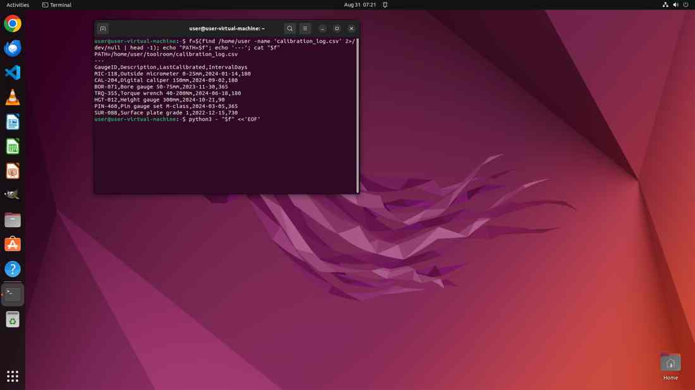
step 7.2 16:21:28
EXECUTED (pyautogui in VM)pyautogui.press("enter")
step 7.3 16:21:31
EXECUTED (pyautogui in VM)pyautogui.typewrite("import sys, csv, datetime")
step 7.4 16:21:35
EXECUTED (pyautogui in VM)pyautogui.press("enter")
step 7.5 16:21:38
EXECUTED (pyautogui in VM)pyautogui.typewrite("src=sys.argv[1]")
step 7.6 16:21:42
EXECUTED (pyautogui in VM)pyautogui.press("enter")
step 7.7 16:21:46
EXECUTED (pyautogui in VM)pyautogui.typewrite("today=datetime.date(2026,8,31)")
step 7.8 16:21:49
EXECUTED (pyautogui in VM)pyautogui.press("enter")
step 7.9 16:21:53
EXECUTED (pyautogui in VM)pyautogui.typewrite("rows=[]")
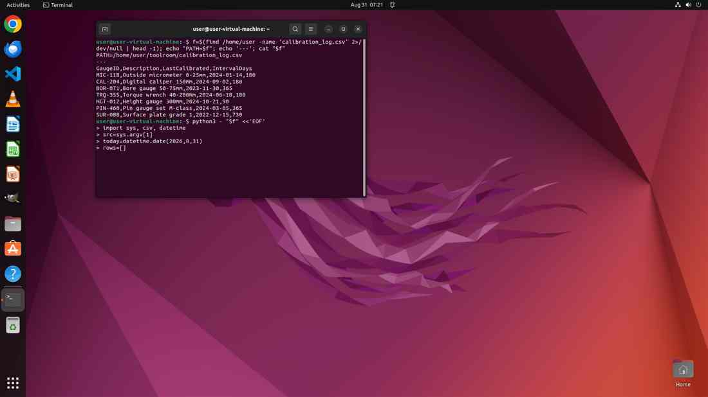
step 7.10 16:21:56
EXECUTED (pyautogui in VM)pyautogui.press("enter")
step 7.11 16:22:00
EXECUTED (pyautogui in VM)pyautogui.typewrite("with open(src) as fh:")
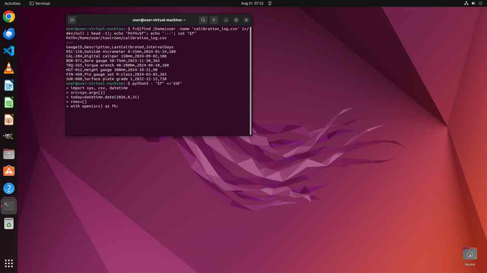
step 7.12 16:22:04
EXECUTED (pyautogui in VM)pyautogui.press("enter")
step 7.13 16:22:07
EXECUTED (pyautogui in VM)pyautogui.typewrite(" r=csv.DictReader(fh)")
step 7.14 16:22:11
EXECUTED (pyautogui in VM)pyautogui.press("enter")
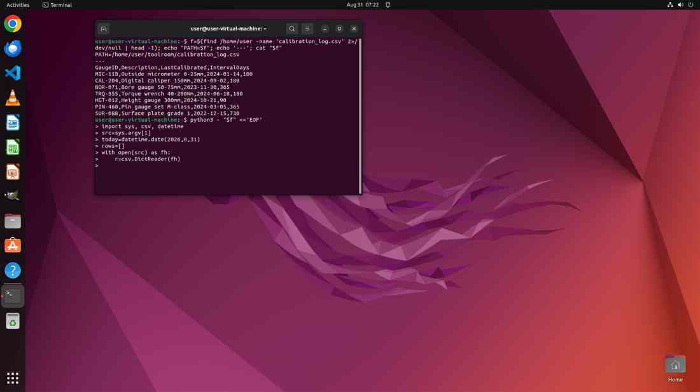
step 7.15 16:22:14
EXECUTED (pyautogui in VM)pyautogui.typewrite(" for row in r:")
step 7.16 16:22:18
EXECUTED (pyautogui in VM)pyautogui.press("enter")
step 7.17 16:22:22
EXECUTED (pyautogui in VM)pyautogui.typewrite(" d=datetime.datetime.strptime(row['LastCalibrated'].strip(),'%Y-%m-%d').date()")
step 7.18 16:22:25
EXECUTED (pyautogui in VM)pyautogui.press("enter")
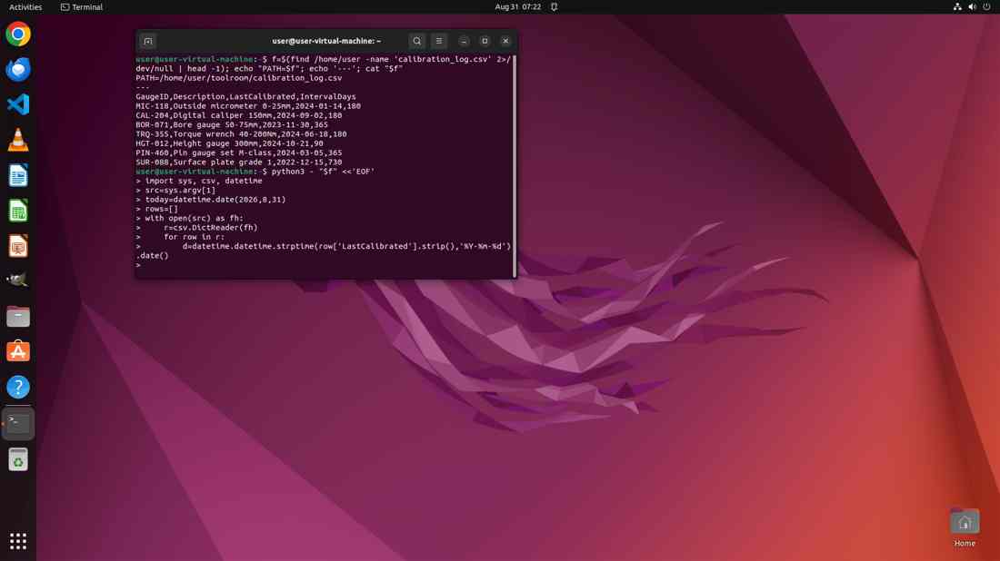
step 7.19 16:22:29
EXECUTED (pyautogui in VM)pyautogui.typewrite(" due=d+datetime.timedelta(days=int(row['IntervalDays'].strip()))")
step 7.20 16:22:33
EXECUTED (pyautogui in VM)pyautogui.press("enter")
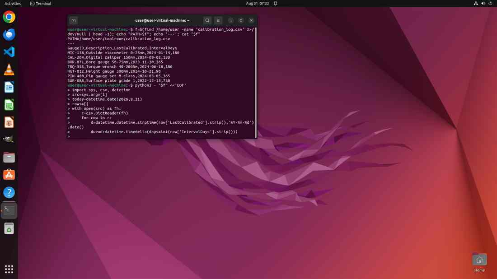
step 7.21 16:22:36
EXECUTED (pyautogui in VM)pyautogui.typewrite(" rows.append((row['GaugeID'].strip(),due))")
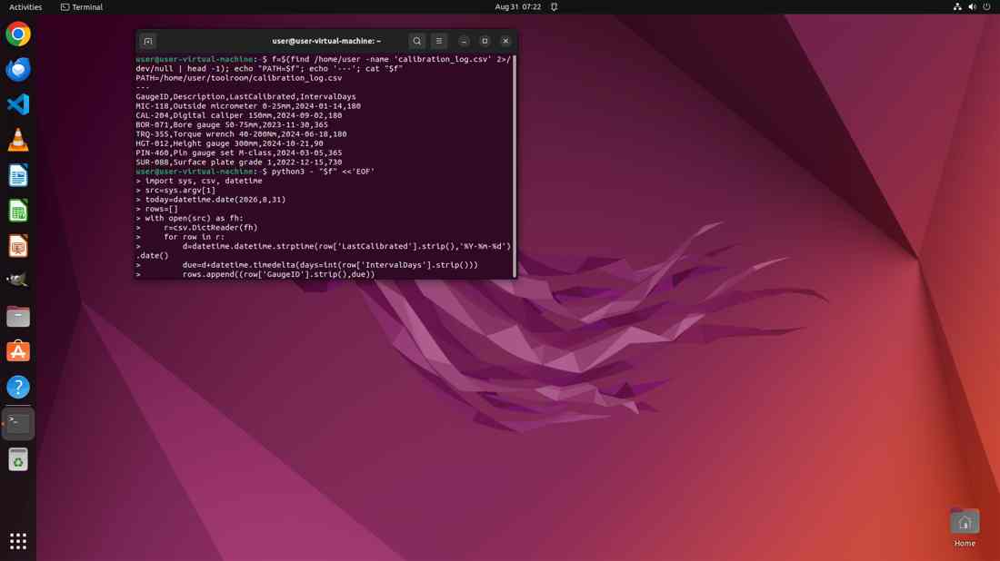
step 7.22 16:22:40
EXECUTED (pyautogui in VM)pyautogui.press("enter")
step 7.23 16:22:43
EXECUTED (pyautogui in VM)pyautogui.typewrite("overdue=[(g,d) for g,d in rows if d<today]")
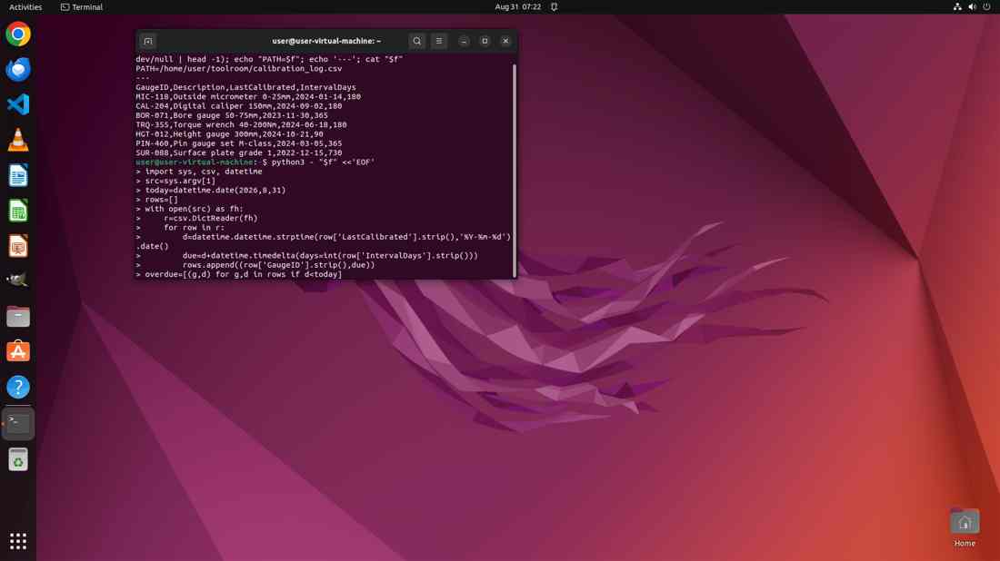
step 7.24 16:22:47
EXECUTED (pyautogui in VM)pyautogui.press("enter")
step 7.25 16:22:51
EXECUTED (pyautogui in VM)pyautogui.typewrite("overdue.sort(key=lambda x:x[1])")
step 7.26 16:22:54
EXECUTED (pyautogui in VM)pyautogui.press("enter")
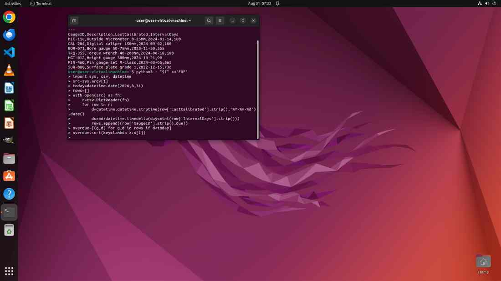
step 7.27 16:22:58
EXECUTED (pyautogui in VM)pyautogui.typewrite("out=src.rsplit('.',1)[0]+'_overdue.txt'")
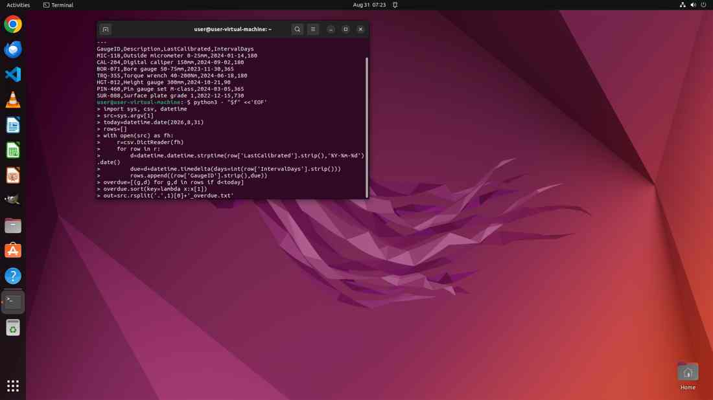
step 7.28 16:23:02
EXECUTED (pyautogui in VM)pyautogui.press("enter")
step 7.29 16:23:05
EXECUTED (pyautogui in VM)pyautogui.typewrite("with open(out,'w') as fh:")
step 7.30 16:23:09
EXECUTED (pyautogui in VM)pyautogui.press("enter")
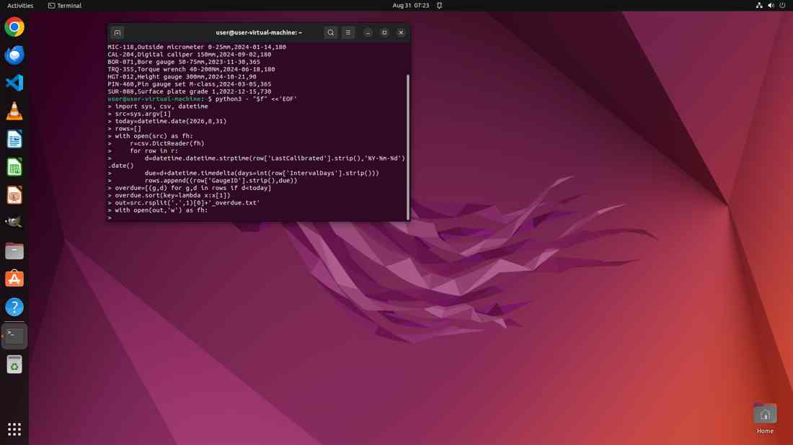
step 7.31 16:23:12
EXECUTED (pyautogui in VM)pyautogui.typewrite(" for g,d in overdue:")
step 7.32 16:23:16
EXECUTED (pyautogui in VM)pyautogui.press("enter")
step 7.33 16:23:20
EXECUTED (pyautogui in VM)pyautogui.typewrite(" fh.write(g+'\\n')")
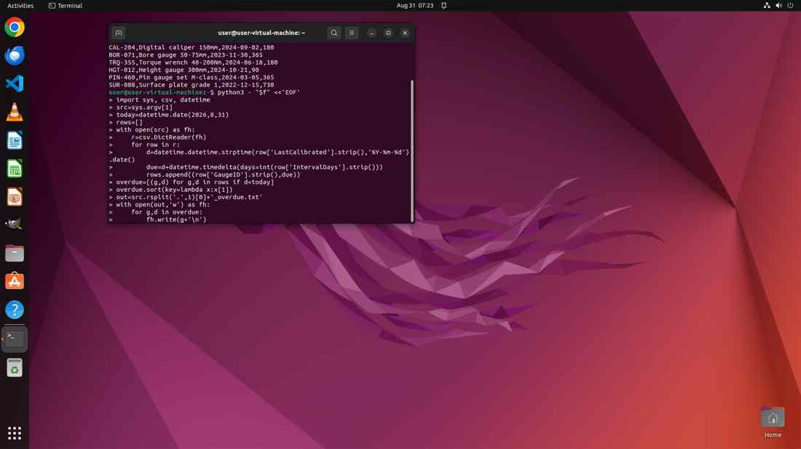
step 7.34 16:23:23
EXECUTED (pyautogui in VM)pyautogui.press("enter")
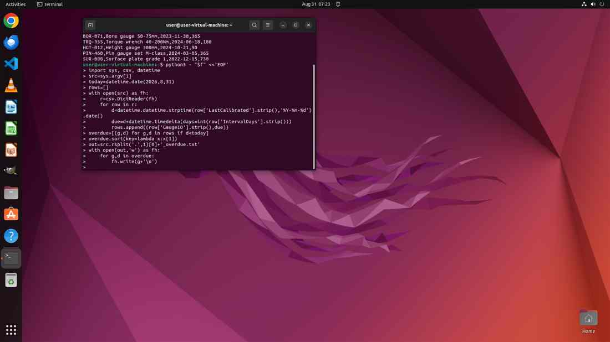
step 7.35 16:23:27
EXECUTED (pyautogui in VM)pyautogui.typewrite("print('WROTE',out)")
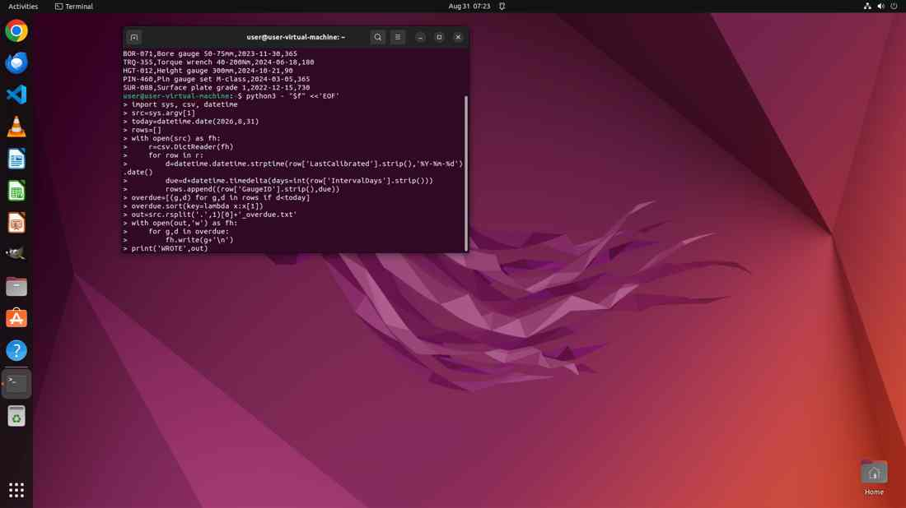
step 7.36 16:23:31
EXECUTED (pyautogui in VM)pyautogui.press("enter")
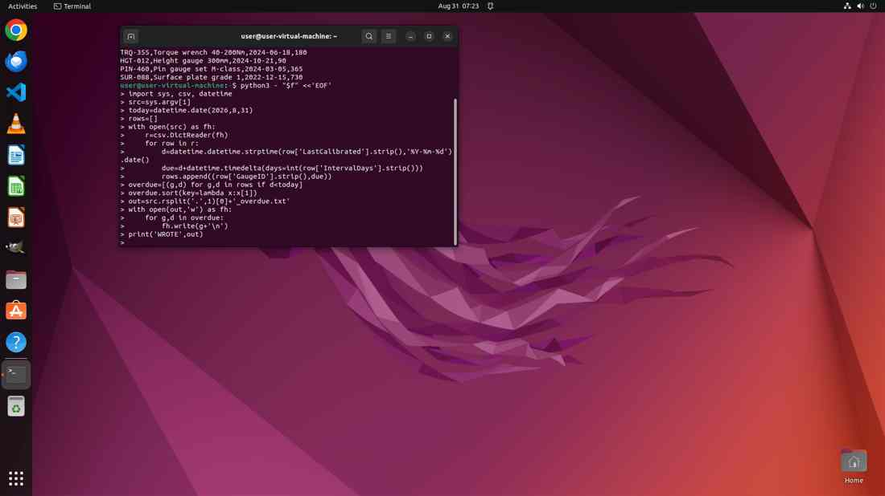
step 7.37 16:23:34
EXECUTED (pyautogui in VM)pyautogui.typewrite("for g,d in overdue: print(g,d.isoformat())")
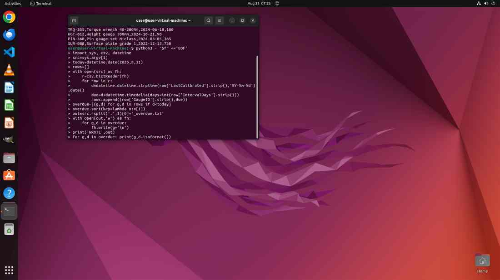
step 7.38 16:23:38
EXECUTED (pyautogui in VM)pyautogui.press("enter")
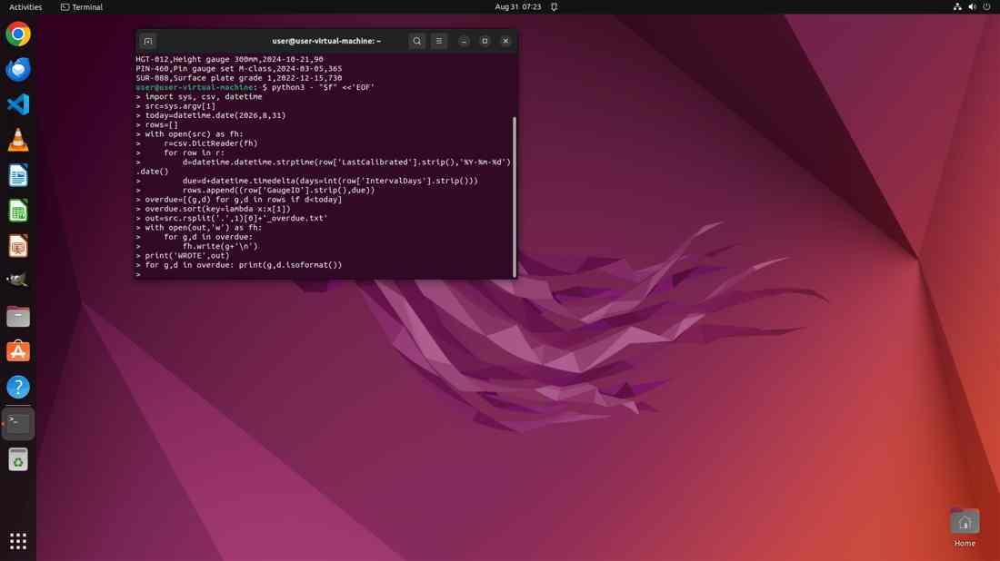
step 7.39 16:23:42
EXECUTED (pyautogui in VM)pyautogui.typewrite("EOF")
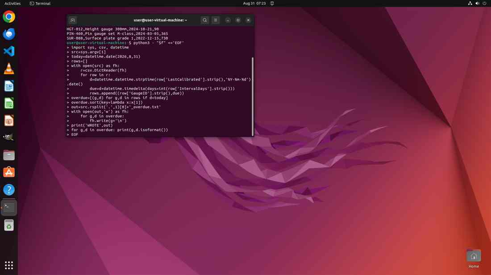
step 8 16:23:57
THINKINGThe heredoc is entered. I need to press Enter to execute (the final EOF line). The last line shows "> EOF" waiting. Let me press Enter to run.
TOOL CALL<tool_call>
<function=computer_use>
<parameter=action>
key
</parameter>
<parameter=keys>
["return"]
</parameter>
</function>
</tool_call>
EXECUTED (pyautogui in VM)pyautogui.press("return")
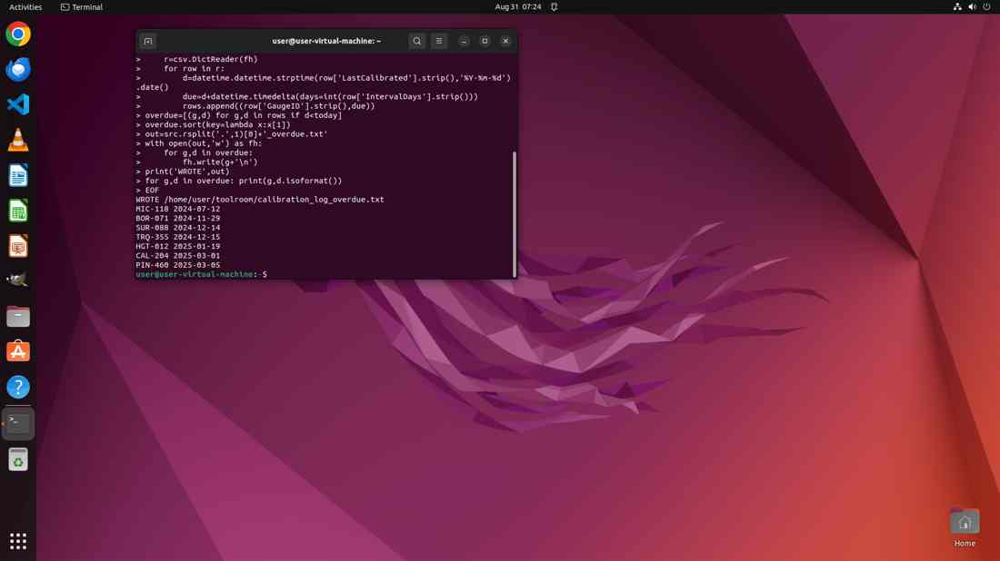
step 9 16:24:16
THINKINGThe script ran successfully. Output file: /home/user/toolroom/calibration_log_overdue.txt
Result (sorted by due date ascending = most overdue first):
- MIC-118 2024-07-12
- BOR-071 2024-11-29
- SUR-088 2024-12-14
- TRQ-355 2024-12-15
- HGT-012 2025-01-19
- CAL-204 2025-03-01
- PIN-460 2025-03-05
All 7 are past due. Note my hand calc had CAL-204 due 2025-02-29 but python gives 2025-03-01 because 2025 is not a leap year (2024-09-02 + 180 days = 2025-03-01). Good, python is correct.
Let me verify the file content.
ACTIONThe script ran successfully. Let me verify the written file's contents.
TOOL CALL<tool_call>
<function=computer_use>
<parameter=action>
type
</parameter>
<parameter=text>
echo '==== FILE CONTENTS ===='; cat /home/user/toolroom/calibration_log_overdue.txt; echo '==== END ===='
</parameter>
</function>
</tool_call>
EXECUTED (pyautogui in VM)pyautogui.typewrite("echo '==== FILE CONTENTS ===='; cat /home/user/toolroom/calibration_log_overdue.txt; echo '==== END ===='")
step 10 16:24:26
THINKINGThe command was typed but I need to press Enter to execute.
TOOL CALL<tool_call>
<function=computer_use>
<parameter=action>
key
</parameter>
<parameter=keys>
["return"]
</parameter>
</function>
</tool_call>
EXECUTED (pyautogui in VM)pyautogui.press("return")
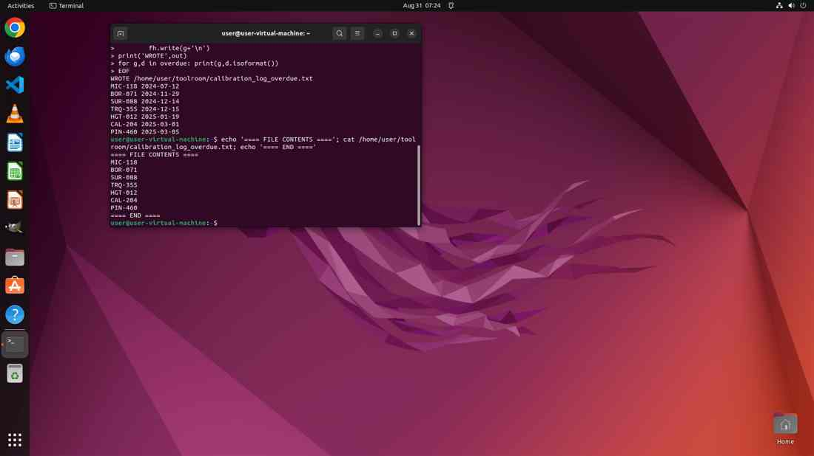
step 11 16:24:43
THINKINGThe file contents are confirmed:
MIC-118
BOR-071
SUR-088
TRQ-355
HGT-012
CAL-204
PIN-460
All 7 gauges past due, sorted most overdue first (earliest due date). The file is at /home/user/toolroom/calibration_log_overdue.txt, next to the CSV. Task complete.
ACTIONDone. I created the plain text file next to the log at `/home/user/toolroom/calibration_log_overdue.txt`.
As of today (Aug 31, 2026), all 7 gauges in the log are past due. I calculated each gauge's due date (LastCalibrated + IntervalDays) and listed them most-overdue-first:
```
MIC-118 (due 2024-07-12)
BOR-071 (due 2024-11-29)
SUR-088 (due 2024-12-14)
TRQ-355 (due 2024-12-15)
HGT-012 (due 2025-01-19)
CAL-204 (due 2025-03-01)
PIN-460 (due 2025-03-05)
```
The file contains just the gauge IDs, one per line, with MIC-118 (the micrometer, overdue by over two years) at the top. So for the 9am audit, MIC-118 is your worst offender, followed by BOR-071 and SUR-088.
EXECUTED (pyautogui in VM)DONE